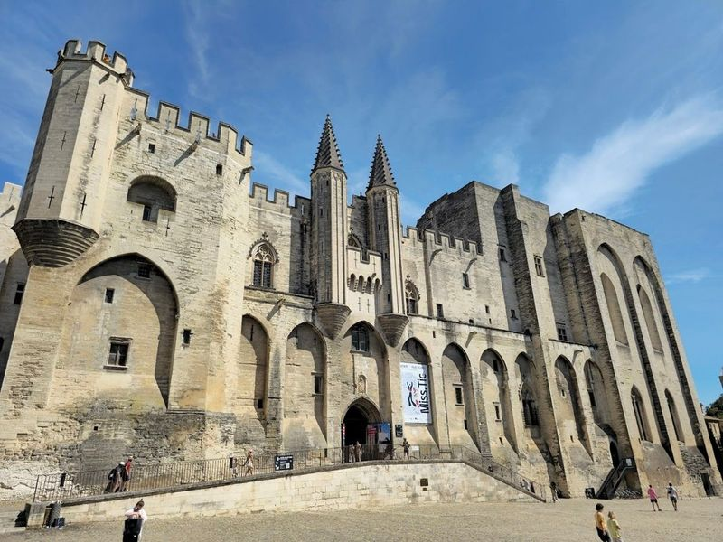
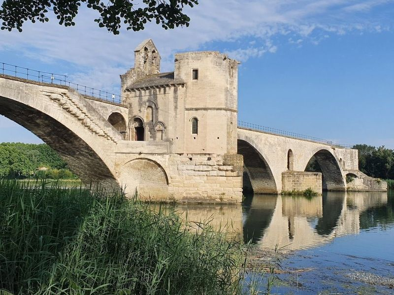
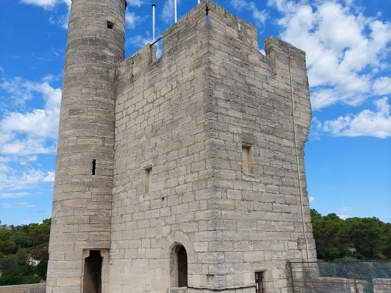
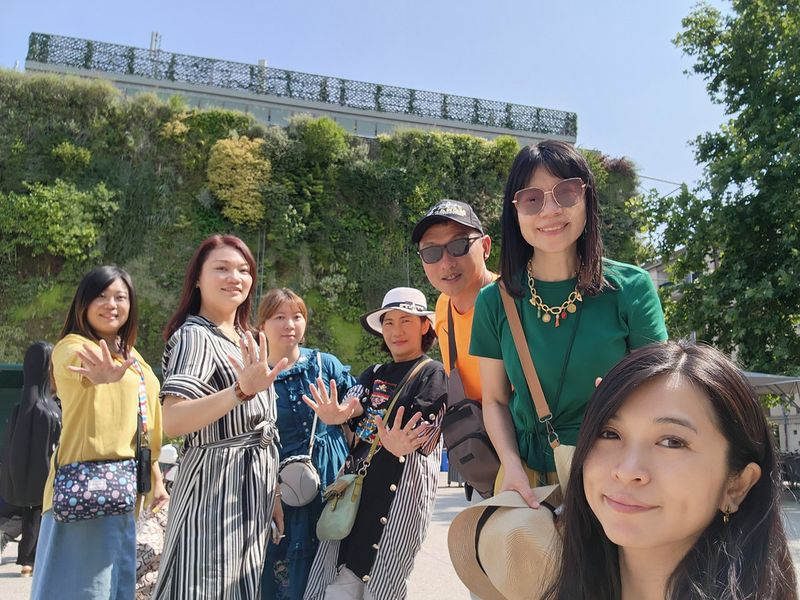
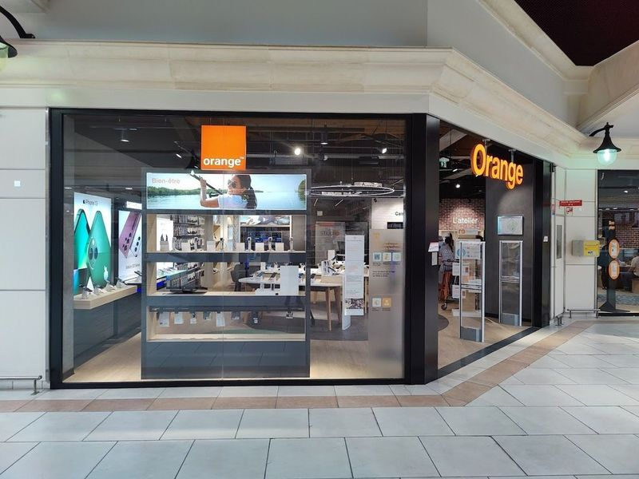
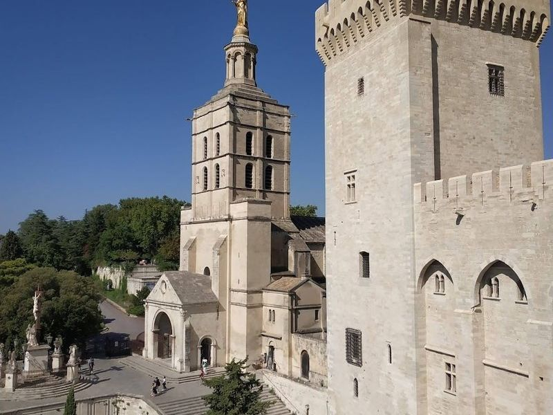
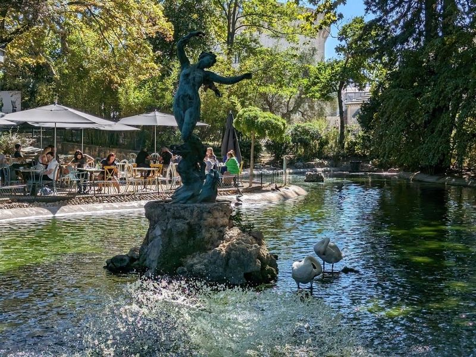
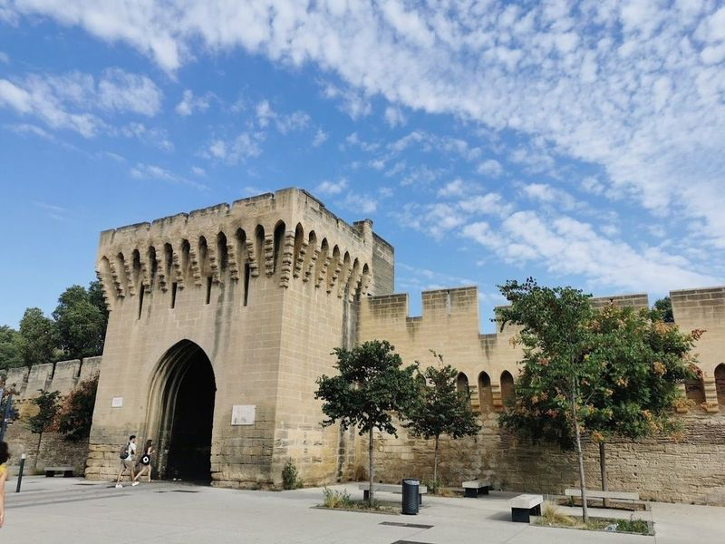
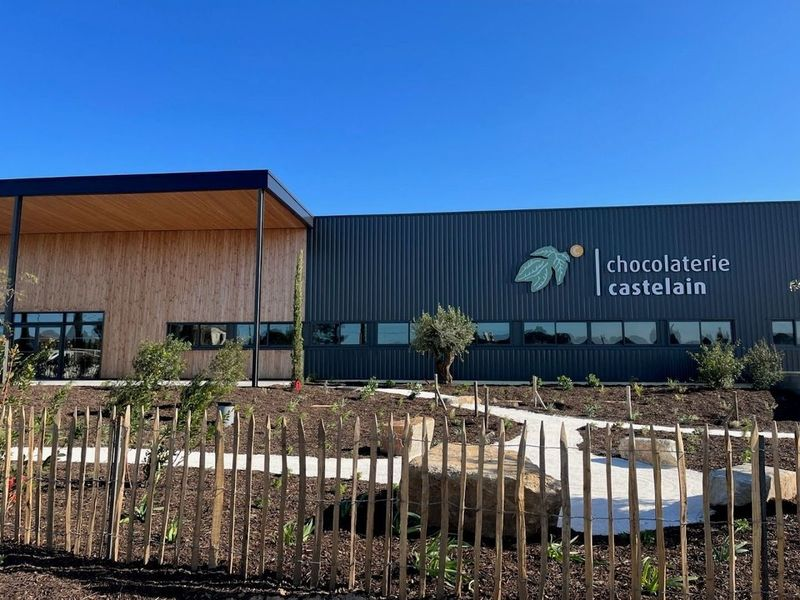
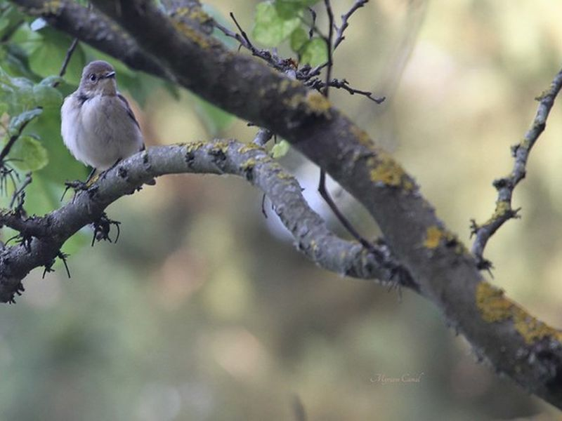

Explore Avignon
A Brief History
Avignon became the seat of the papacy from 1309 to 1377 when French-born Clement V and his successors built the fortress-like palace on the Rhône, drawing cardinals, bankers, and artists to Provence. The city remained papal property until the Revolution, with its broken bridge and ramparts symbolising medieval church power. Theatre festivals, wine trade, and rail links later turned Avignon into a cultural gateway between the Mediterranean coast and the interior of southern France.
Attractions Map
Top Sights & Activities

Palais des Papes
The Palais des Papes, once a rival to the Vatican, is an imposing structure consisting of two different parts: the severe Palais Vieux and the more decorative Palais Nouveau. The interiors are austere due to the loss of original furnishings during history, but travellers can still imagine its medieval splendor with colorful frescoes and grand halls. The palace hosts cultural events in its courtyard, showcasing performances in various languages.

The Bridge of Avignon
The Bridge of Avignon, also known as Pont Saint-Benezet, is a famous medieval bridge with four arches spanning the Rhone River and featuring a small chapel dedicated to St. Nicholas. Located in the culturally rich city of Avignon in the Provence region, this historic site is just one of five UNESCO world heritage sites in the area.

Tour Philippe-le-Bel
Tour Philippe-le-Bel is a historic fortress constructed in the 13th century by King Philip IV of France at the entrance of the Avignon Bridge. It served as a strategic stronghold in medieval southern France. Today, it stands as the only remaining vestige of the fortress and features vaulted halls hosting art exhibitions. The bridge it once guarded has been dismantled and rebuilt over time, with only four arches, a gatehouse, and a chapel remaining from its original structure.

Les Halles d'Avignon
This bustling indoor market is a must-visit for food lovers, offering a wide variety of fresh produce, local delicacies, and gourmet specialties. The site is catalogued as a tourist attraction. The site is catalogued as a tourist attraction. The site is catalogued as a tourist attraction.

Orange
between the historic cities of Nimes and Arles, Orange is a gem that showcases the grandeur of Roman heritage. The Antique Theatre in Orange stands out as well-preserved Roman theatres, offering travellers a glimpse into ancient civilization's rich cultural tapestry. Beyond its historical significance, Orange boasts an inviting atmosphere where local businesses thrive.

Notre Dame des Doms
Avignon Cathedral, also known as Cathedrale Notre-Dame des Doms d'Avignon, is a 12th-century Romanesque-style building located next to the Papal Palace. The cathedral is adorned with a gilded statue of the Virgin Mary and is a UNESCO Heritage Site. Its elevated position on a rocky ledge allows it to be visible from various points in the city and beyond.

Jardin des Doms
Jardin des Doms is a picturesque public garden located on a hill in Avignon, offering views of the Rhone River and the countryside. The park features a pond, a cafe, tall trees, fountains, and sculptures, making it an ideal place for leisurely strolls while enjoying the panoramic scenery. travellers can access the garden for free during its opening hours from 7:30 AM to 8 PM.

Remparts d'Avignon
The Remparts d'Avignon, a remarkable set of fortified walls encircling the historic city of Avignon in southern France, stand as a testament to medieval architecture and defense. Constructed between 1355 and 1370 during the papacy, these impressive stone walls stretch over 4 kilometers and rise about 8 meters high.

Chocolaterie Castelain
Chocolaterie Castelain offers a unique experience with its wine and chocolate pairing, where travellers can explore different combinations of white and red wines with various chocolates. Despite being more of a chocolate shop than a museum, the staff is described as pleasant and accommodating. The place caters to both adults and children, offering wine tasting for the former and chocolate decorating for the latter.

Parc Chico Mendes
The site is catalogued as a tourist attraction. The site is catalogued as a tourist attraction. The site is catalogued as a tourist attraction. Parc Chico Mendes is listed among principal sites for Avignon within France. Municipal and regional heritage listings document its place in the historic centre and travellers routes through Avignon.